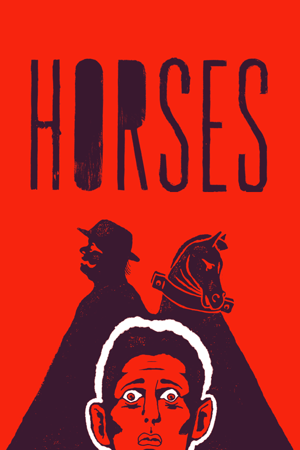

Horses
Every archived year-end list appearance, including placement and points earned.
About the Game
Fourteen days, a horse farm, and a few rules to follow... Take a break from your college coursework and spend the summer helping out on a secluded farm. The air is warm, the horses are quiet, and the people are down-to-earth. Each day brings new tasks, and the work itself is simple, even if the goals are a little unclear. Sometimes, after the sun sets on a productive day, there are even activities to be found in the evenings. HORSES is a first-person game with live-action sequences. Over the course of fourteen days, it welcomes you into encounters that test your obedience, complicity, and restraint. HIGHLIGHTS Immerse yourself in the eerie fusion of gameplay and FMV intermissions. Witness the farm's unspeakable horrors through daily unique interactions. Heed the farmer's warnings or face consequences (?) Withstand 14 days of spiraling dread as the reality of the farm unfolds. A full playthrough lasts 3 to 4 hours.
| Released | 2025-12-01 |
|---|---|
| Developer | Andrea Lucco Borlera |
| Publisher | Santa Ragione |
| Platforms | PC |
workuniqueHorsessummerfarmhorsebreakcollegefusion
Game information provided by RAWG.
Points by Year
List History
| Year | Source | List | Placement | Points |
|---|---|---|---|---|
| 2025 | Eurogamer | The 50 best games of 2025, ranked | 46 | 1 |
| 2025 | Slant Magazine | The Best Video Games of 2025 | 22 | 3 |